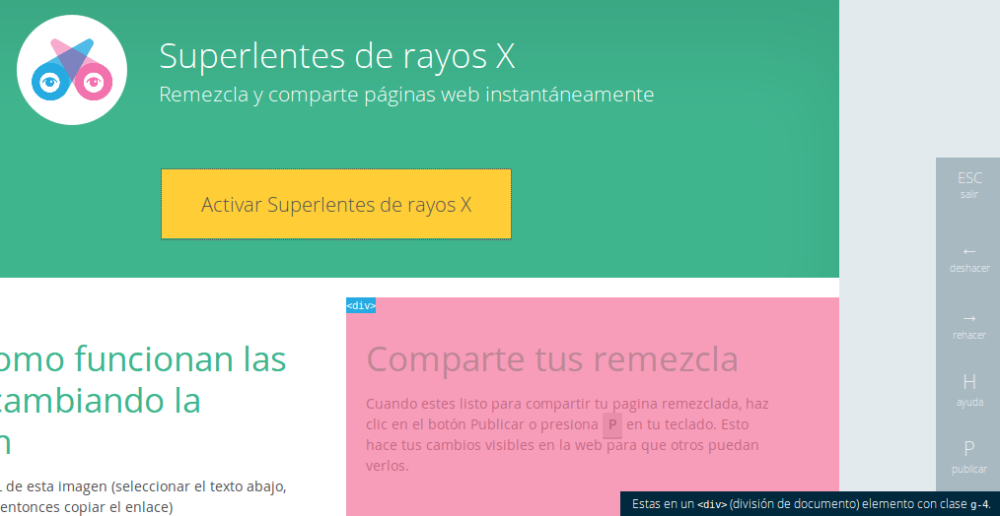

Educación abierta para la Web abierta
Sebastián Magrí (@sebasmagri). Febrero de 2014
Un proyecto hecho por Mozilleros
Los Mozilleros son personas que crean cosas. El objetivo de Mozilla es mover a la gente de consumir a crear.
Mitchell Baker - Mozilla Chair
Un proyecto de Mozilla para la
alfabetización sobre la Web.
Busca ayudar a las personas a tener la capacidad de aprender las cosas que necesitan saber para hacer un mejor uso de la Web y dar forma a la Web abierta que el mundo necesita.
A todas estas...
¿Qué es Mozilla?

Un pelo de historia...
Principios del Manifiesto de Mozilla
http://www.mozilla.org/es-ES/about/manifesto/1. Internet es una parte integral de la vida moderna. Un componente clave para la educación, la comunicación, la colaboración, los negocios, el entretenimiento y para la sociedad en su conjunto.
2. Internet es un recurso público mundial que debe seguir siendo abierto y accesible.
3. Internet debe enriquecer la vida de los seres humanos.
4. La seguridad de los usuarios en Internet es fundamental y no debe ser tratada como algo opcional.
5. Los usuarios deben tener la posibilidad de moldear su propia experiencia en Internet.
6. La efectividad de Internet como un recurso público depende de la interoperabilidad (protocolos, formato de datos, contenido), la innovación y la participación descentralizada en todo el mundo.
7. El software libre y de código abierto promueve el desarrollo de Internet como un recurso público.
8. Los procesos transparentes basados en la comunidad promueven la participación, la responsabilidad y la confianza.
9. El uso comercial de Internet proporciona muchos beneficios a su desarrollo; es crucial un equilibrio entre los objetivos comerciales y el beneficio público.
10. Maximizar los aspectos de beneficio público de Internet es un objetivo importante que merece nuestro tiempo, atención y compromiso.
¿Por qué es importante alfabetizar sobre la Web?
Mejorar el entendimiento sobre Internet y sus características les da a las personas mayor control de su vida en línea y les permite aprovechar las oportunidades que ofrece la Web para crecer y tener bienestar.
¿Qué tan importante es la Web en nuestras vidas?
- Más de 2400 millones de usuarios en el mundo.
-
De acuerdo con datos oficiales (CONATEL):
- 12 millones de usuarios de Internet en Venezuela
- 41% de los venezolanos tiene acceso a Internet
- Venezuela ocupa la casilla 22 en el ranking de usuarios de Facebook™, casi 10 millones.
- Venezuela ocupa el puesto 11 en el ranking de usuarios de Twitter™, casi 9 millones.
Entonces, ¿Qué ofrece Mozilla Webmaker ?
Un estándar para la enseñanza sobre la Web
https://webmaker.org/es/standard
Es un mapa de competencias importantes para la lectura, escritura y participación de la Web.
Herramientas
para el aprendizaje y la enseñanza
Superlentes de Rayos X
Thimble

Popcorn